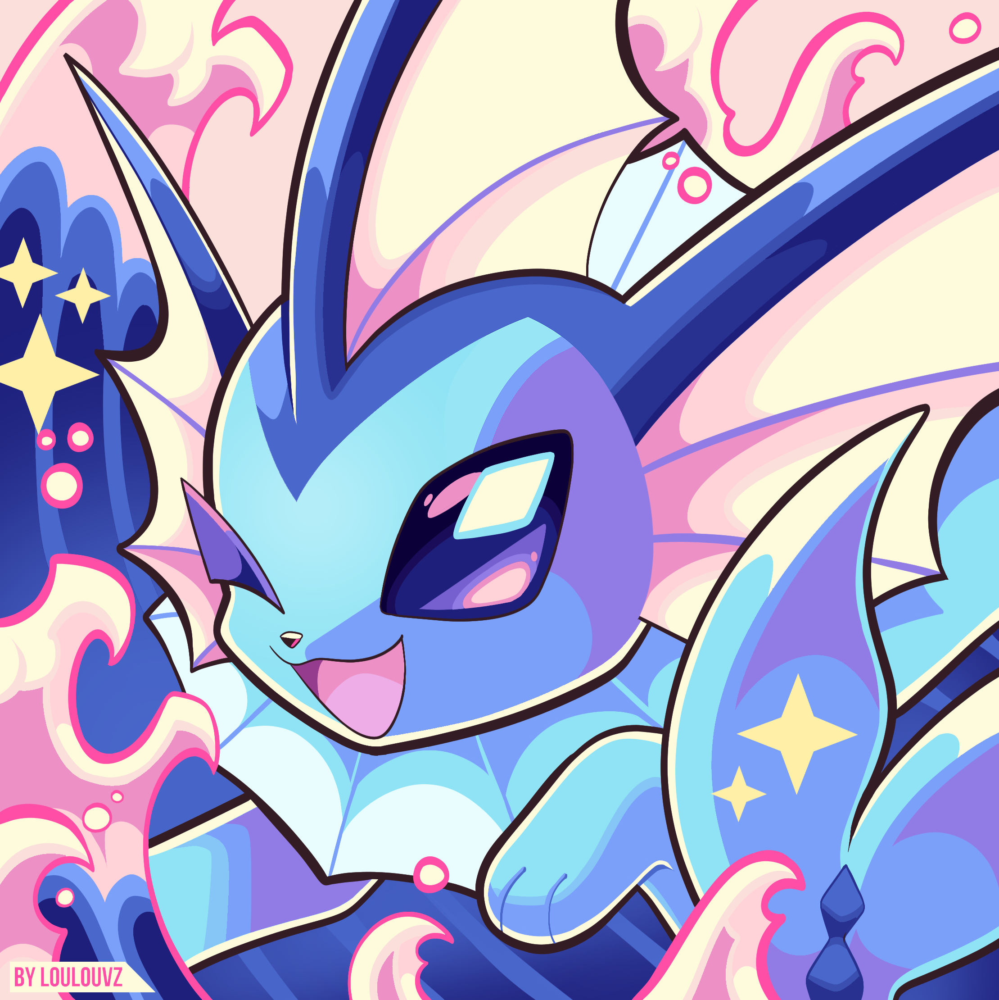
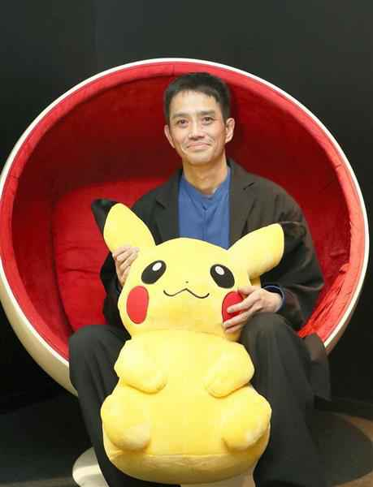

Vaporeon

Vaporeon (em Japonês: シャワーズ Showers) e um Pokémon do tipo água introduzido na primera generação. é uma das evoluções posiveis do Eevee, sendo as outras Jolteon, Flareon, Umbreon, Espeon, Leafeon, Glaceon e Sylveon.
Tipos de Vaporeon
3 dias atrás

Criado por
Satoshi Tajiri